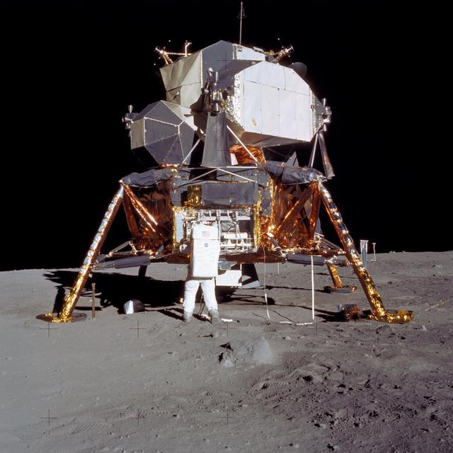

MOON · 1969
☾
LUNAR LANDING

Apollo 11 Lunar Module
The Eagle carried Neil Armstrong and Buzz Aldrin from lunar orbit to the Moon's surface in July 1969. Its descent stage remained on the Moon after the astronauts returned to orbit.
Purpose Land astronautsLegacy First crewed lunar landing
STATUS · DESCENT STAGE LEFT ON MOONNASA mission source ↗